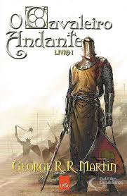

O Cavaleiro Andante

Sinopse:
"O Cavaleiro Andante" (The Hedge Knight) é o primeiro conto da série O Cavaleiro dos Sete Reinos, de George R.R. Martin. Ambientada cerca de 90 anos antes de A Guerra dos Tronos, a história segue Dunk, um jovem escudeiro que assume o lugar de seu mestre falecido, tornando-se um cavaleiro errante. Acompanhado pelo garoto Egg, ele busca fama no torneio de Vaufreixo, mas acaba envolvido em intrigas Targaryen.
Comprar o livro